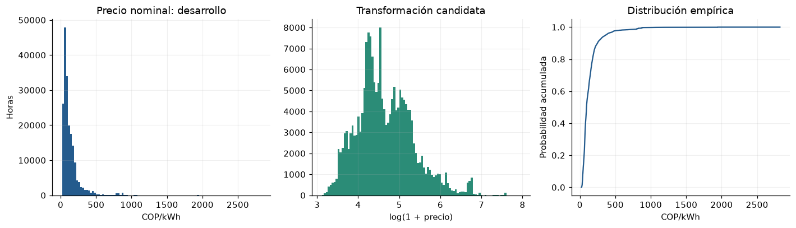
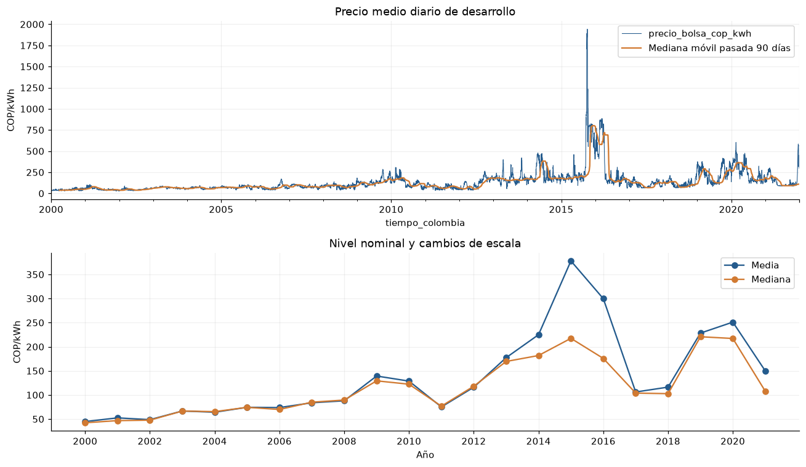
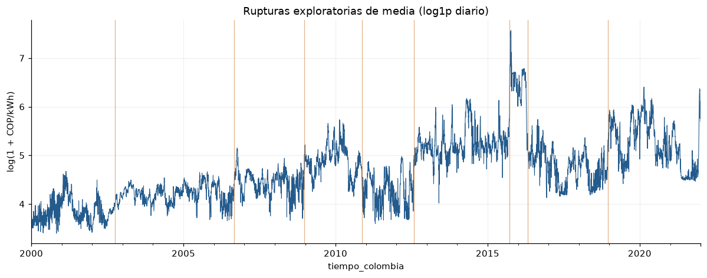

3. Distribución, anomalías y cambios de régimen#
El análisis numérico utiliza el periodo completo de desarrollo 2000–2021. Los ajustes de escaladores y modelos se realizan dentro de cada fold.
Los precios están en COP nominales por kWh. Se comparan escala original y log1p, como diagnóstico retrospectivo de desarrollo; los parámetros de una transformación predictiva se estiman sólo con el entrenamiento de cada fold. Los umbrales IQR/MAD son diagnósticos explícitos y no reglas de eliminación.
Las rupturas se buscan sobre la media diaria en log1p estandarizada con desarrollo: segmentación binaria determinista, segmentos de al menos 90 días, candidatos cada 7 días, umbral de ganancia SSE de \(3\log n\) y un máximo de ocho rupturas. El procedimiento identifica cambios exploratorios de media para el análisis de regímenes.
%matplotlib inline
from pathlib import Path
ROOT = next(
directory for directory in [Path.cwd(), *Path.cwd().parents]
if (directory / "data/manifest.json").exists()
)
from IPython.display import Markdown, display
import json
import numpy as np
import pandas as pd
import matplotlib.pyplot as plt
from scipy import signal, stats
TARGET = 'precio_bolsa_cop_kwh'
EDA_SPLITS = {'train': (2000, 2017), 'validation': (2018, 2021), 'test': (2022, 2025)}
SPLITS = EDA_SPLITS
TIME = 'timestamp_start_colombia'
RESULTS = ROOT / 'results'
PIPELINE_DEFAULTS = {'method': 'split_train_val_forwardChaining', 'n_splits': 5, 'development_start': '2000-01-01T00:00:00-05:00', 'validation_start': '2018-01-01T00:00:00-05:00', 'development_end_exclusive': '2022-01-01T00:00:00-05:00', 'test_start': '2022-01-01T00:00:00-05:00', 'test_end_exclusive': '2026-01-01T00:00:00-05:00', 'lookback_hours': 168, 'horizon_hours': 24, 'stride_hours': 24, 'hourly_release_lag_hours': 24, 'hydrology_release_lag_days': 2, 'include_calendar': True, 'seed': 11037, 'availability_scenario': 'retrospective_assumed_release_lags'}
RESULTS.mkdir(exist_ok=True)
(RESULTS / 'figures').mkdir(exist_ok=True)
(RESULTS / 'tables').mkdir(exist_ok=True)
plt.rcParams.update({'figure.figsize': (11, 4.4), 'figure.dpi': 110, 'savefig.dpi': 160, 'axes.spines.top': False, 'axes.spines.right': False, 'axes.grid': True, 'grid.alpha': 0.18, 'axes.prop_cycle': plt.cycler(color=['#245b8d', '#d17a32', '#2b8c77', '#8c5da8', '#9a4949'])})
pd.set_option('display.max_rows', 35)
pd.set_option('display.max_columns', 14)
pd.set_option('display.float_format', lambda x: f'{x:.5g}')
def load_numeric(split='train', table='hourly', *, allow_test=False):
if split not in SPLITS:
raise ValueError('Unknown split')
if split == 'test' and (not allow_test):
raise PermissionError('El EDA no puede consultar valores de prueba.')
a, b = SPLITS[split]
folder = 'hourly' if table == 'hourly' else 'hydrology'
frame = pd.concat([pd.read_csv(ROOT / f'data/numeric/{folder}/{year}.csv.gz') for year in range(a, b + 1)], ignore_index=True)
if table == 'hourly':
frame.index = pd.DatetimeIndex(pd.to_datetime(frame[TIME], utc=True)).tz_convert('America/Bogota')
else:
frame.index = pd.DatetimeIndex(pd.to_datetime(frame['date'])).tz_localize('America/Bogota')
frame.index.name = 'tiempo_colombia'
return frame
def load_development_data(table='hourly'):
return pd.concat([load_numeric('train', table=table), load_numeric('validation', table=table)]).sort_index()
def pipeline_config(overrides=None):
config = dict(PIPELINE_DEFAULTS)
if overrides:
unknown = set(overrides) - set(config)
if unknown:
raise ValueError('Opciones desconocidas: ' + str(sorted(unknown)))
config.update(overrides)
for field in ['n_splits', 'lookback_hours', 'horizon_hours', 'stride_hours']:
if not isinstance(config[field], int) or isinstance(config[field], bool) or config[field] < 1:
raise ValueError('Se requiere un entero positivo: ' + field)
for field in ['hourly_release_lag_hours', 'hydrology_release_lag_days']:
if not isinstance(config[field], int) or isinstance(config[field], bool) or config[field] < 0:
raise ValueError('Rezago inválido: ' + field)
if config['hydrology_release_lag_days'] < 1:
raise ValueError('La hidrología diaria requiere al menos el cierre del día.')
for field in ['development_start', 'validation_start', 'development_end_exclusive', 'test_start', 'test_end_exclusive']:
if pd.Timestamp(config[field]).tzinfo is None:
raise ValueError('Se requiere zona horaria: ' + field)
if config['method'] != 'split_train_val_forwardChaining':
raise ValueError('Método no autorizado')
if pd.Timestamp(config['test_start']) != pd.Timestamp(PIPELINE_DEFAULTS['test_start']) or config['test_end_exclusive'] != PIPELINE_DEFAULTS['test_end_exclusive']:
raise ValueError('El periodo de prueba está congelado.')
if not pd.Timestamp(config['development_start']) < pd.Timestamp(config['validation_start']) < pd.Timestamp(config['development_end_exclusive']) <= pd.Timestamp(config['test_start']):
raise ValueError('Cortes temporales inválidos')
if config['stride_hours'] % 24:
raise ValueError('Los orígenes deben conservar el paso diario.')
return config
def load_pipeline_config(path=None):
path = ROOT / 'configs/training_pipeline.json' if path is None else path
return pipeline_config(json.loads(path.read_text(encoding='utf-8')))
def load_eda_development(table='hourly'):
"""Desarrollo completo; no cambia las particiones que usa el entrenamiento."""
config = load_pipeline_config()
frame = load_development_data(table)
if len(frame) and frame.index.max() >= pd.Timestamp(config['test_start']):
raise PermissionError('La fuente contiene fechas de prueba.')
start = pd.Timestamp(config['development_start'])
end = pd.Timestamp(config['development_end_exclusive'])
frame = frame.loc[(frame.index >= start) & (frame.index < end)]
if frame.empty or frame.index.max() >= pd.Timestamp(config['test_start']):
raise PermissionError('El EDA sólo admite desarrollo anterior a prueba.')
return frame
def development_daily():
frame = load_eda_development()
return (frame, frame[TARGET].resample('D').mean())
frame, daily = development_daily()
y = frame[TARGET]
desc = y.describe(percentiles=[0.01, 0.05, 0.25, 0.5, 0.75, 0.95, 0.99, 0.999]).to_frame('COP/kWh')
desc.loc['asimetría'] = stats.skew(y)
desc.loc['curtosis_exceso'] = stats.kurtosis(y)
table(desc, 'distribucion_precio_desarrollo')
| COP/kWh | |
|---|---|
| count | 1.9286e+05 |
| mean | 135.82 |
| std | 137.05 |
| min | 21.531 |
| 1% | 29.318 |
| 5% | 37.321 |
| 25% | 65.316 |
| 50% | 93.246 |
| 75% | 160.46 |
| 95% | 362.01 |
| 99% | 810.01 |
| 99.9% | 1492 |
| max | 2821.5 |
| asimetría | 4.618 |
| curtosis_exceso | 35.972 |
fig, axes = plt.subplots(1, 3, figsize=(13, 3.8))
axes[0].hist(y, bins=100, color='#245b8d')
axes[0].set(xlabel='COP/kWh', ylabel='Horas', title='Precio nominal: desarrollo')
axes[1].hist(np.log1p(y), bins=100, color='#2b8c77')
axes[1].set(xlabel='log(1 + precio)', title='Transformación candidata')
q = np.sort(y)
axes[2].plot(q, np.arange(1, len(q) + 1) / len(q))
axes[2].set(xlabel='COP/kWh', ylabel='Probabilidad acumulada', title='Distribución empírica')
figure(fig, 'distribucion_precio')

q1, q3 = y.quantile([0.25, 0.75])
iqr = q3 - q1
med = y.median()
mad = (y - med).abs().median()
upper = q3 + 1.5 * iqr
robust = med + 6 * 1.4826 * mad
out = pd.DataFrame({'umbral_superior': [upper, robust], 'horas_mayores': [(y > upper).sum(), (y > robust).sum()]}, index=['IQR 1,5', 'MAD 6'])
table(out, 'umbrales_anomalias_desarrollo')
| umbral_superior | horas_mayores | |
|---|---|---|
| IQR 1,5 | 303.18 | 13407 |
| MAD 6 | 446.92 | 6158 |
diagnostic = (y - med).abs()
influence = []
for label, mask in [('Mayor que Q99', y > y.quantile(0.99)), ('Mayor que umbral IQR', y > upper)]:
influence.append(dict(grupo=label, fraccion_horas=float(mask.mean()), fraccion_error_absoluto=float(diagnostic[mask].sum() / diagnostic.sum()), fraccion_error_cuadratico=float((diagnostic[mask] ** 2).sum() / (diagnostic ** 2).sum())))
table(pd.DataFrame(influence).set_index('grupo'), 'influencia_anomalias_perdida_desarrollo')
| fraccion_horas | fraccion_error_absoluto | fraccion_error_cuadratico | |
|---|---|---|---|
| grupo | |||
| Mayor que Q99 | 0.0099863 | 0.12128 | 0.42609 |
| Mayor que umbral IQR | 0.069515 | 0.40637 | 0.83037 |
La influencia se mide respecto de la mediana de desarrollo como centro diagnóstico, no como pronóstico evaluado. Cuantifica cuánto pesan los extremos en errores absolutos y cuadrados sin consultar prueba ni eliminar esos episodios.
fig, axes = plt.subplots(2, 1, figsize=(12, 7))
daily.plot(ax=axes[0], lw=0.7)
daily.rolling(90, min_periods=90).median().plot(ax=axes[0], lw=1.5, label='Mediana móvil pasada 90 días')
axes[0].set(ylabel='COP/kWh', title='Precio medio diario de desarrollo')
axes[0].legend()
yearly = frame.assign(anio=frame.index.year).groupby('anio')[TARGET].agg(['mean', 'median', 'std', 'max'])
yearly[['mean', 'median']].plot(ax=axes[1], marker='o')
axes[1].set(ylabel='COP/kWh', xlabel='Año', title='Nivel nominal y cambios de escala')
axes[1].set_xticks(yearly.index[::2])
axes[1].set_xticklabels([str(y) for y in yearly.index[::2]])
axes[1].legend(['Media', 'Mediana'])
figure(fig, 'precio_regimenes')

table(yearly, 'precio_anual_desarrollo')
| mean | median | std | max | |
|---|---|---|---|---|
| anio | ||||
| 2000 | 44.738 | 42.297 | 15.743 | 96.138 |
| 2001 | 52.471 | 46.728 | 20 | 118.07 |
| 2002 | 48.728 | 47.684 | 11.978 | 138.55 |
| 2003 | 66.726 | 66.624 | 10.915 | 148 |
| 2004 | 64.17 | 65.371 | 12.822 | 189.9 |
| 2005 | 74.359 | 74.333 | 15.345 | 186.75 |
| 2006 | 73.794 | 69.887 | 29.437 | 281.23 |
| 2007 | 83.775 | 85.002 | 18.712 | 154.7 |
| 2008 | 87.875 | 89.425 | 33.351 | 438.84 |
| 2009 | 139.28 | 129.26 | 46.06 | 321.27 |
| 2010 | 128.72 | 122.29 | 58.248 | 360.64 |
| 2011 | 75.088 | 76.737 | 31.696 | 403.71 |
| 2012 | 116 | 118.15 | 61.457 | 307.61 |
| 2013 | 177.35 | 169.48 | 62.979 | 451.39 |
| 2014 | 224.98 | 181.81 | 106.55 | 480.54 |
| 2015 | 378.11 | 217.46 | 342.6 | 2821.5 |
| 2016 | 299.8 | 175.78 | 251.81 | 884.84 |
| 2017 | 106.11 | 103.88 | 37.888 | 383.45 |
| 2018 | 116.25 | 102.66 | 49.624 | 555.12 |
| 2019 | 228.31 | 220.78 | 97.183 | 910.47 |
| 2020 | 251.1 | 217.14 | 113.44 | 745.5 |
| 2021 | 150.07 | 107.95 | 94.112 | 592.91 |
z = np.log1p(daily.to_numpy())
z = (z - z.mean()) / z.std()
cuts = []
pending = [(0, len(z))]
while pending and len(cuts) < 8:
left, right = pending.pop(0)
if right - left < 180:
continue
x = z[left:right]
cs = np.r_[0, np.cumsum(x)]
n = len(x)
idx = np.arange(90, n - 89, 7)
gain = cs[idx] ** 2 / idx + (cs[-1] - cs[idx]) ** 2 / (n - idx) - cs[-1] ** 2 / n
best = int(np.argmax(gain))
if gain[best] > 3 * np.log(len(z)):
cut = left + int(idx[best])
cuts.append((cut, float(gain[best])))
pending.extend([(left, cut), (cut, right)])
breaks = pd.DataFrame([dict(fecha=daily.index[i].date(), ganancia_sse=g) for i, g in sorted(cuts)])
table(breaks, 'rupturas_exploratorias_desarrollo')
| fecha | ganancia_sse | |
|---|---|---|
| 0 | 2002-10-04 | 170.89 |
| 1 | 2006-09-01 | 612.36 |
| 2 | 2008-12-18 | 178.51 |
| 3 | 2010-11-18 | 147.85 |
| 4 | 2012-07-27 | 3702.3 |
| 5 | 2015-09-17 | 666.44 |
| 6 | 2016-04-28 | 356.92 |
| 7 | 2018-12-12 | 300.35 |
fig, ax = plt.subplots()
np.log1p(daily).plot(ax=ax, lw=0.7)
for i, g in cuts:
ax.axvline(daily.index[i], color='#d17a32', alpha=0.6, lw=0.8)
ax.set(title='Rupturas exploratorias de media (log1p diario)', ylabel='log(1 + COP/kWh)')
figure(fig, 'rupturas_desarrollo')

Implicaciones del análisis
Preprocesamiento: Comparar escala robusta/log1p con escala en COP, ajustadas sólo con train. IQR superior=303.18; no eliminar picos por ser extremos.
Arquitectura: Capacidad para cambios de nivel y colas; considerar salida robusta o probabilística, sin inferir que NLP ya ayuda.
Validación: Mantener episodios extremos en evaluación futura y reportar error por régimen; evitar métricas porcentuales cerca de cero.
Riesgos: Precios nominales de años distintos no son poder adquisitivo constante. Una ruptura estadística no identifica su causa; STL centrada y segmentación usan futuro dentro de train y no son atributos operativos.